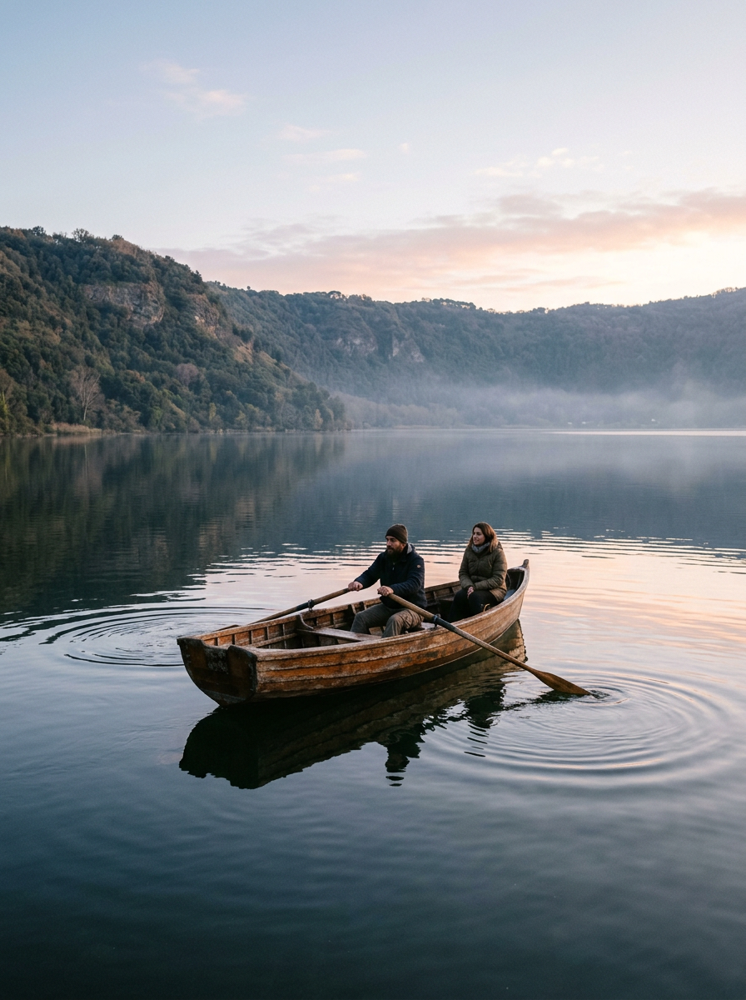
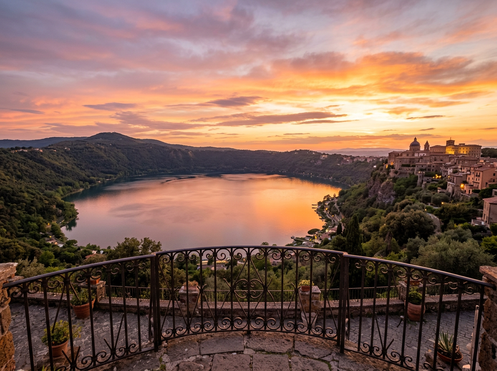
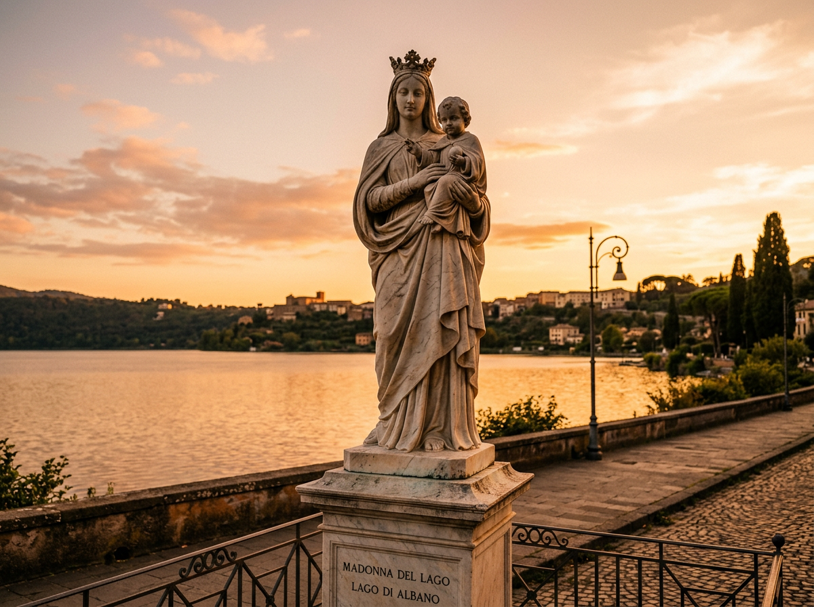
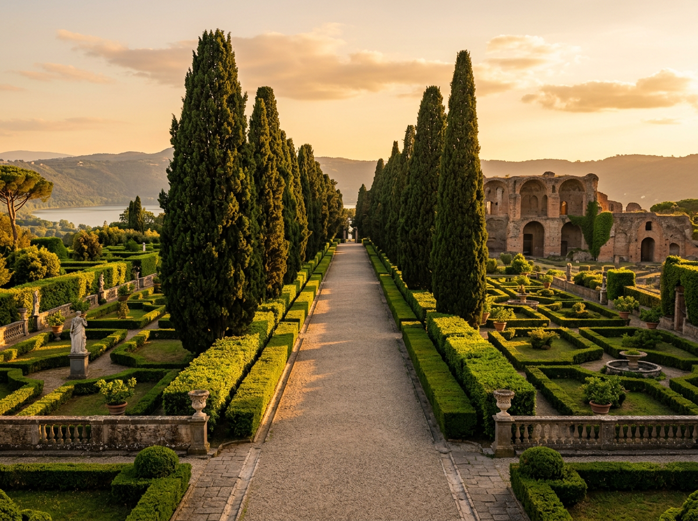
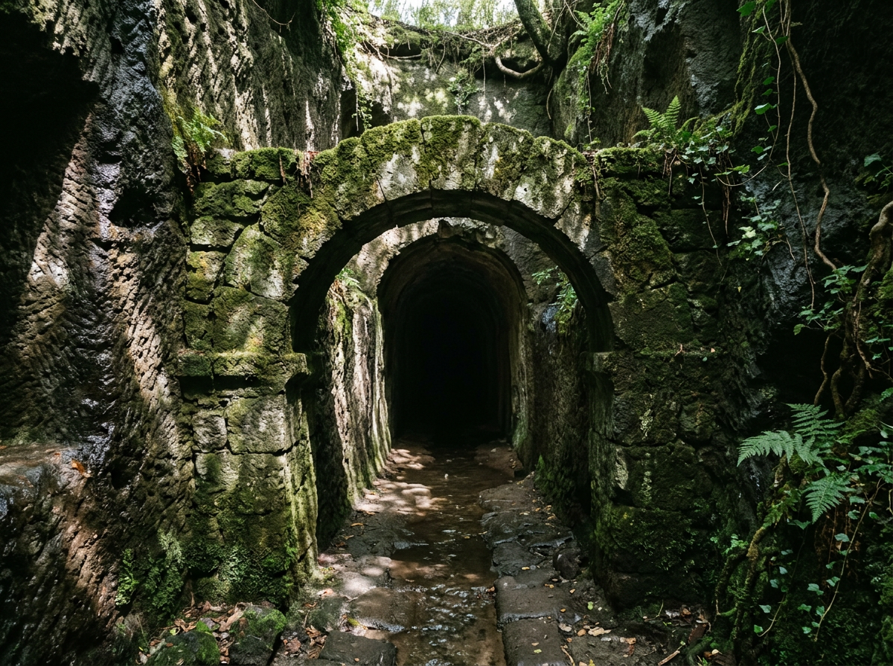
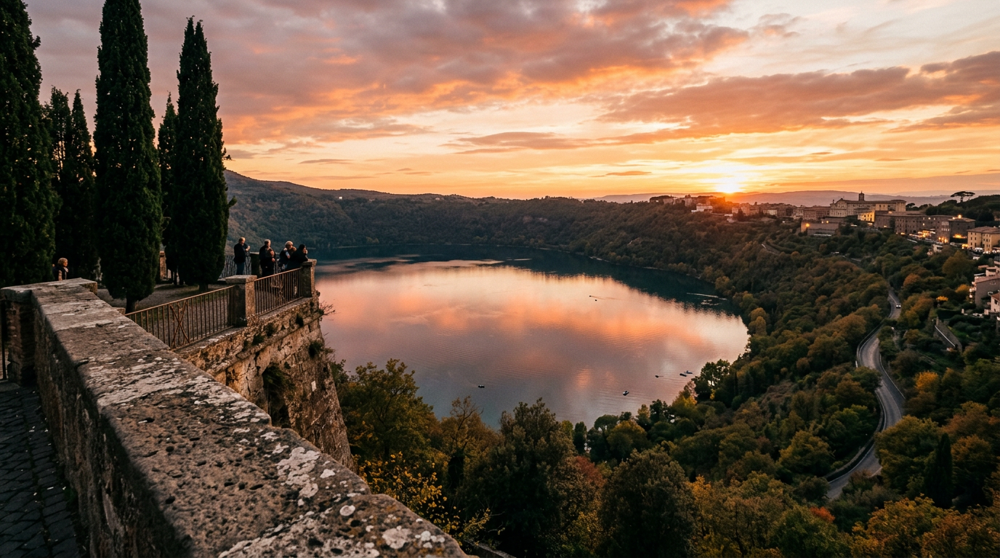
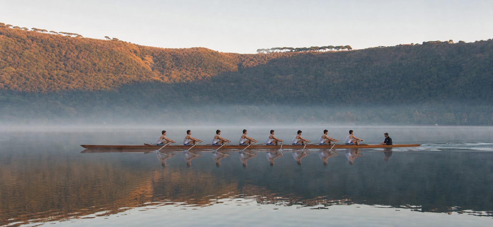

Lago Albano, il cratere blu.

Il Lago Albano è il più profondo del Lazio, formato dall'unione di due crateri della caldera dei Colli Albani. L'unico emissario è artificiale: la galleria scavata dai Romani nel 398 a.C., ancora perfettamente funzionante. Motori vietati, acqua di qualità buona secondo Arpa Lazio, riva percorribile a piedi in circa quattro ore.

Stagione dal 1 maggio al 30 settembre.
L'ordinanza balneare 2026 del Comune di Castel Gandolfo apre ufficialmente la stagione per quasi cinque mesi. Divieto assoluto di bagno notturno (bagno di mezzanotte), di tende e di animali sulle spiagge libere. Sanzioni previste da 25 a 500 euro. Fonte: ordinanza sindacale 2026.
Nel 2025 due punti di prelievo Arpa Lazio sono stati classificati "eccellenti" e uno "buono" ([Il Caffè TV](https://ilcaffe.tv/articolo/222848/lago-albano-la-stagione-balneare-parte-bene-acqua-eccellente)). Nel Lazio, il 91% delle acque di balneazione è classificato "eccellente" ([Arpa Lazio](https://www.arpalazio.it/news/-/asset_publisher/HGkuYUQGGDZL/blog/id/412057)).
Attività sul lago vulcanico.
Sport acquatici a impatto zero, sentieri panoramici, cicloturismo e pesca sportiva. Il lago è una palestra naturale per chi cerca il contatto con l'acqua senza il rumore dei motori.

Kayak & Canoa
CK Academy noleggia kayak singoli e doppi con lezioni introduttive. Perfetto per bambini e principianti.

Stand Up Paddle
La disciplina più amata dell'ultimo decennio: pagaia in piedi con vista sul borgo dall'acqua.

Battello turistico
Traversata da una sponda all'altra con commento storico. Ideale per fotografare il palazzo dall'acqua.

Periplo CAI 510
Anello di circa 10 km attorno al lago, dislivello contenuto. Percorribile in 3–4 ore, tutto l'anno.

Pesca no-kill
Il lago ospita persico reale, luccio, tinca, coregone. Permesso obbligatorio (FIPSAS).

Ciclabile del cratere
Percorso in bici da corsa o gravel lungo la strada che circonda il lago, con salite panoramiche.
Cosa non fare.
Il lago è un ecosistema fragile e un'area protetta del Parco Regionale dei Castelli Romani. L'ordinanza balneare 2026 stabilisce divieti chiari.
Motori a scoppio
Vietati barche a motore e moto d'acqua. Ammessi solo natanti a pedali, remi, vela o elettrici a basso impatto.
Bagno notturno
Balneazione consentita solo dalle prime luci dell'alba al tramonto. Multe da €25 a €500.
Tende & falò
Vietato campeggiare, montare tende o accendere fuochi sulle rive. Consentiti solo picnic senza fiamme.
Animali in spiaggia
Cani non ammessi sulle spiagge libere balneabili. Consentiti nelle aree adiacenti al guinzaglio.
Spiagge & stabilimenti.
Gli stabilimenti balneari si trovano prevalentemente sul versante nord del lago, tra Castel Gandolfo e Albano Laziale, lungo Via Spiaggia del Lago. Prezzi indicativi da 10 euro al giorno per ombrellone + due lettini ([Parco Castelli Romani](https://fabulous.huopenair.com/it/esperienze/lago-albano-cosa-fare-e-vedere-nei-castelli-romani)). Prenotazione online consigliata nei weekend estivi.
Vagea Beach Club
Indirizzo: Via Spiaggia del Lago, fronte civico 15, 00073 Castel Gandolfo. Spiaggia sabbiosa con cabine, docce calde, bar. Prenotabile online su spiagge.it. Uno degli stabilimenti storici del lago, spesso primo a riaprire in stagione.
Le Ninfe Beach Club
Sponda nord, lido attrezzato per chi cerca comfort e acqua calma. Solarium in erba, campo da beach volley, ambiente famiglie con acque poco profonde vicino alla riva. Sito ufficiale: leninfebeachclub.it. Consigliato per tramonti e aperitivi sul lago ([Milazzo Life](https://milazzo.life/migliori-spiagge-di-castel-gandolfo/)).
La Pentima
Via Spiaggia del Lago. Servizi completi: area ombreggiata, Wi-Fi gratuito, noleggio biciclette per il giro del lago, campo da beach volley, zona food & drink. Personale con soccorso balneare presente. Uno dei più apprezzati per rapporto qualità/prezzo ([Hu Openair — Lago Albano](https://fabulous.huopenair.com/it/esperienze/lago-albano-cosa-fare-e-vedere-nei-castelli-romani)).
Tropicana
Castel Gandolfo, area attrezzata con docce calde e bar. Uno degli stabilimenti con spiaggia più estesa. Prenotabile su spiagge.it.
Mad Village by Lagolandia
Complesso più grande sul lungolago. Cabine, bar, piscina, area giochi. Sito ufficiale: mad-village.it. Adatto a chi cerca una giornata attrezzata con servizi completi per famiglie.
Le Lunette
Piccola baia sul Lago Albano, tranquilla e attrezzata. Ideale per chi cerca relax a contatto con la natura, meno affollata degli altri stabilimenti ([Milazzo Life](https://milazzo.life/migliori-spiagge-di-castel-gandolfo/)).
Spiaggia libera del Lago Albano
Riva stretta con fondale misto tra sabbia scura, ciottoli e tratti più fangosi. Balneabilità 1 maggio – 30 settembre 2026. Parcheggio a pagamento sul lungolago: 4,80 euro al giorno o 1,20 euro all'ora. Accesso libero e gratuito, portare tutto con sé.
Come arrivare al lungolago
Via Appia (SS7) o GRA fino all'uscita Marino/Castel Gandolfo. Seguire indicazione "Al Lago", svoltare a destra e percorrere la strada fino al tunnel che sbocca sul lungolago di Via Spiaggia del Lago. Parcheggio a pagamento disponibile. Il pedalò costa circa 10 euro a persona per un'ora.
Fonti verificate: spiagge.it, Parco dei Castelli Romani, Comune di Castel Gandolfo. Prezzi e orari possono variare stagionalmente.

Un cratere di 600.000 anni.
La caldera del Vulcano Laziale iniziò la sua attività 600.000 anni fa e si spense in epoca mesolitica, intorno al 5.000 a.C. Il Lago Albano si è formato dall'unione di due crateri: la profondità raggiunge i 168 metri. Nel 398 a.C. i Romani scavarono un emissario artificiale lungo 1.450 metri per regolarne il livello, ancora oggi funzionante.
Alle Olimpiadi del 1960 il lago ospitò le gare di canottaggio e canoa. Le boe del campo di regata olimpico sono ancora ancorate sul fondo.
“Un'acqua così profonda che i Romani, per svuotarla, dovettero scavare una galleria di quasi un chilometro e mezzo.”Tito Livio · Ab Urbe Condita, V, 15
Mappa del borgo e del lago.
Il Palazzo Apostolico, i giardini pontifici, le spiagge, i ristoranti e gli alloggi selezionati. Clicca su ogni marker per il dettaglio.
Mappa © OpenStreetMap contributors · rendering Leaflet.
Prenota una giornata sul lago.
Combina noleggio kayak, pranzo in fraschetta e passeggiata sul periplo. Un'esperienza completa in un giorno.